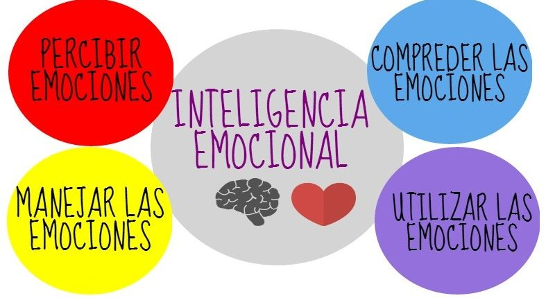
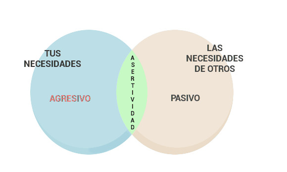

Inteligencia Emocional: Es la capacidad de entender tus propias emociones y los sentimientos de las demás personas al igual que las emociones
cada persona es diferente por experimentan emociones de forma particular, dependiendo de sus experiencias
anteriores, aprendizaje, carácter y de la situación concreta también Algunas de las reacciones fisiológicas y comportamentales
que desencadenan las emociones son innatas, mientras que otras pueden adquirirse

Asertividad: Es la capacidad de expresar las opiniones, los sentimientos, las actitudes y los deseos, y reclamar los propios
derechos, en el momento adecuado, sin ansiedad excesiva, y de una manera que no afecte a los derechos de los demás con esto quiere
decir que se trata de defender los derechos de una persona sin herir sus sentimientos y sin hacer mucho alboroto o escándalo.

Capasidad de escuchar: Es decir que tenemos saber a escuchar los demás personas al igual lo que anquerido decir y que sientan que se les ha escuchado.
esta seria unas de lsa técnicas para escuchar atentamente: no interrumpir, ser capaz de parafrasear, entender el significado subyacente y
aceptar los puntos de vista de los demás.

|